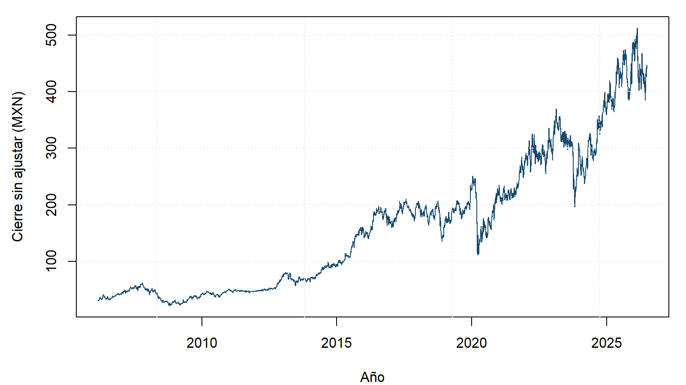
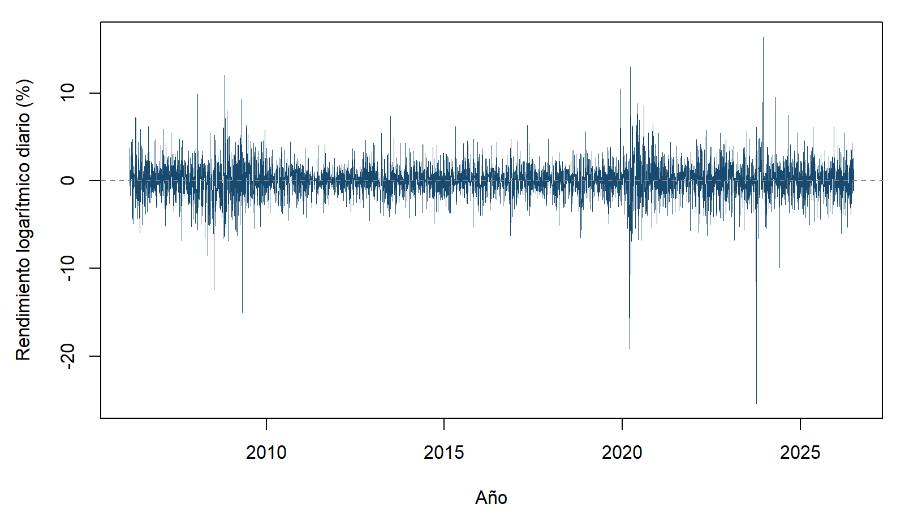
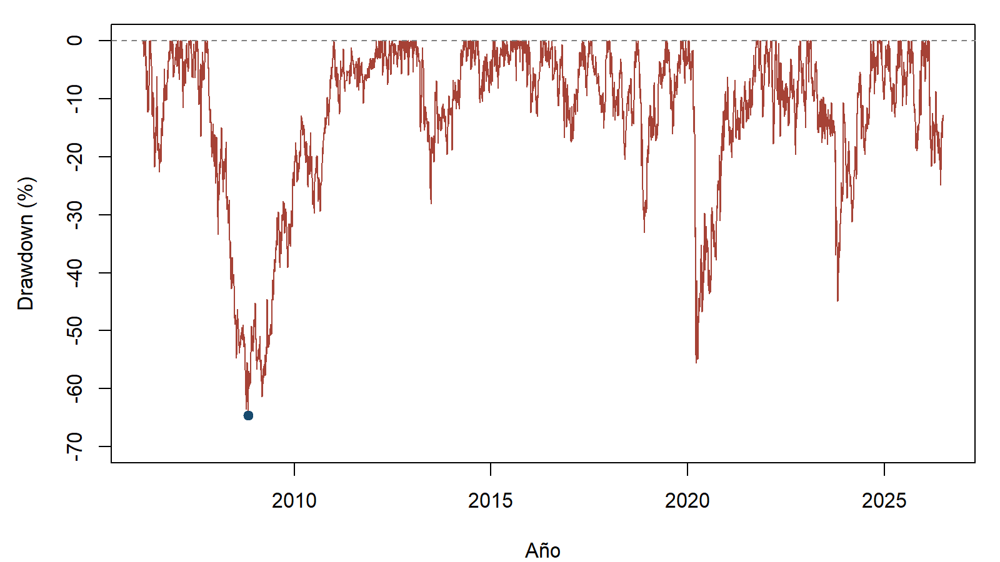
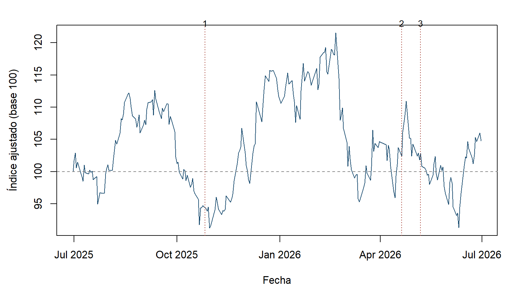

Proyecto Final · Parte 2 | GAPB, febrero de 2006–junio de 2026
Autores/as
Santiago Álvarez Tostado Estrada
Francisco Uriel Ledezma Chávez
Jorge Isaac López Ávila
Juan Pablo Morán Errejón
Fecha de publicación
22 de septiembre de 2026
Activo y mercado
Grupo Aeroportuario del Pacífico · GAPB en la BMV
Corte del análisis
30 de junio de 2026
Último año
Julio de 2025–junio de 2026
Fuentes
Yahoo Finance, Banco Mundial y documentos primarios
1 Introducción
El precio de una acción concentra expectativas sobre ingresos, costos y riesgos que todavía no se materializan, por lo que una empresa puede conservar sus instalaciones y sus concesiones mientras su valor de mercado cambia de manera considerable. En Grupo Aeroportuario del Pacífico, esta relación resulta especialmente visible, ya que el tráfico de pasajeros depende de la actividad económica y del turismo, mientras que las tarifas, las restricciones a la movilidad y las decisiones corporativas modifican los flujos que esperan recibir los accionistas.
El propósito de esta segunda parte es estudiar cómo se ha comportado GAPB desde sus primeras observaciones bursátiles hasta el primer semestre de 2026, identificar cinco episodios relevantes y contrastarlos con hechos documentados, además de medir la pérdida acumulada más profunda y comparar los rendimientos anuales con el crecimiento de México. Finalmente, se examina julio de 2025–junio de 2026 para reconocer situaciones en las que una noticia operativa y la respuesta del precio pueden tener distinta magnitud, o incluso distinto signo.
La interpretación es descriptiva: una coincidencia temporal, acompañada de un mecanismo financiero razonable, permite proponer una explicación, aunque no demuestra cuánto del movimiento fue causado exclusivamente por ese evento. Esta distinción evita presentar el conocimiento posterior como si hubiera sido una predicción disponible para el inversionista.
2 Datos y criterios de cálculo
Cobertura y fuentes
GAP realizó su oferta pública el 24 de febrero de 2006, mientras que la base disponible comienza el 27 de febrero de 2006, es decir, en la siguiente sesión bursátil, por lo que no contamos con el cierre del día de colocación y no lo sustituimos por un precio estimado (Grupo Aeroportuario del Pacífico, 2010). La serie corresponde a la acción mexicana en pesos, no al ADS negociado en Nueva York.
Los precios se leen de la copia pública guardada en el repositorio, obtenida de Yahoo Finance y registrada el 27 de agosto de 2026, pero se filtran al corte de esta entrega antes de calcular cualquier resultado. Por ello, se trata de una reconstrucción histórica con la versión disponible de los datos, incluidos sus ajustes retrospectivos, y no de una base congelada tal como se conocía en junio. El reporte no descarga información durante su ejecución (Yahoo Finance, 2026).
El cierre sin ajustar indica la cotización de mercado de cada fecha, mientras que el cierre ajustado incorpora los ajustes del proveedor por distribuciones y desdoblamientos, de modo que sus cocientes sirven como aproximación al desempeño de una inversión con distribuciones reinvertidas. No se interpreta el nivel ajustado como el efectivo que se habría pagado por una acción en esa fecha, ni se descuentan impuestos, comisiones o inflación.
Para describir los cambios diarios utilizamos rendimientos logarítmicos, y para expresar la ganancia o pérdida de un periodo empleamos rendimientos simples acumulados:
Ambas medidas parten de la misma serie, aunque sus porcentajes no son intercambiables en movimientos grandes. En todas las ventanas, la fecha inicial representa el cierre de referencia y la final representa el cierre de salida; los cuadros muestran rendimientos simples, mientras que la gráfica diaria utiliza logarítmicos.
3 Trayectoria histórica
La Figura 1 permite observar la cotización sin ajustar, con una expansión importante en el largo plazo y retrocesos que interrumpen esa trayectoria. Por su parte, la Figura 2 muestra que la variación diaria no tiene una intensidad constante: existen tramos relativamente tranquilos y concentraciones de movimientos extremos, principalmente alrededor de las crisis y de cambios regulatorios.
Ver código
par(mar =c(4, 4.5, 1, 1))plot(prices$date, prices$close, type ="l", col ="#174A6E",xlab ="Año", ylab ="Cierre sin ajustar (MXN)", lwd =1)grid(col ="#E5E7EB")

Figura 1: Cierre de GAPB sin ajustar, en pesos por acción. Fuente: copia local de Yahoo Finance.
Ver código
par(mar =c(4, 4.5, 1, 1))plot(prices$date, 100* prices$log_return, type ="l", col ="#174A6E",xlab ="Año", ylab ="Rendimiento logarítmico diario (%)", lwd =0.6)abline(h =0, col ="#808080", lty =2)

Figura 2: Rendimientos logarítmicos diarios calculados con el cierre ajustado, en porcentaje.
La muestra contiene 5115 precios y 5114 rendimientos diarios. La trayectoria ascendente del precio no elimina el riesgo, porque un inversionista que necesita retirar recursos durante una caída enfrenta una pérdida distinta de la que sugiere comparar únicamente el primer y el último cierre, además de que los dividendos hacen necesario distinguir entre cotización y desempeño ajustado.
Máximo drawdown
El drawdown mide cuánto se encuentra una inversión por debajo del máximo alcanzado hasta esa fecha, de acuerdo con \(DD_t=P_t^{aj}/\max_{s\leq t}P_s^{aj}-1\). El máximo drawdown es el valor más negativo de esa serie, por lo que reúne profundidad y orden temporal de las pérdidas, sin depender de que los rendimientos sigan una distribución normal.
par(mar =c(4, 4.5, 1, 1))plot(prices$date, 100* prices$drawdown, type ="l", col ="#A64236",xlab ="Año", ylab ="Drawdown (%)", ylim =c(-70, 0))abline(h =0, col ="#808080", lty =2)points(prices$date[trough], 100* mdd, pch =19, col ="#174A6E")

Figura 3: Drawdown del cierre ajustado, con el mínimo histórico señalado.
Ver código
dd_table <-data.frame(Indicador =c("Pérdida máxima", "Máximo previo", "Mínimo posterior","Primera recuperación", "Días naturales del máximo a la recuperación"),Resultado =c(sprintf("%.2f%%", 100* mdd),as.character(prices$date[peak]), as.character(prices$date[trough]),as.character(prices$date[recovery]),as.character(as.integer(prices$date[recovery] - prices$date[peak]))))report_table(dd_table)
Tabla 1: Profundidad y fechas del máximo drawdown sobre la serie ajustada.
Indicador
Resultado
Pérdida máxima
-64.58%
Máximo previo
2007-10-18
Mínimo posterior
2008-10-27
Primera recuperación
2012-02-27
Días naturales del máximo a la recuperación
1593
La pérdida máxima fue de 64.58%, desde el 18 de octubre de 2007 hasta el 27 de octubre de 2008, y el nivel ajustado del máximo previo se recuperó hasta el 27 de febrero de 2012. Una inversión equivalente a 100 pesos en el máximo habría descendido a aproximadamente 35.42 pesos, por lo que recuperar el nivel inicial requería posteriormente una subida de 182.33%, no solamente un aumento igual al porcentaje perdido.
La caída de 2020 fue muy intensa, aunque no fue la más profunda de toda la muestra, lo cual muestra por qué conviene calcular este indicador sobre la historia completa y no elegir el episodio más reciente o más recordado. La recuperación señalada corresponde al precio ajustado, sin considerar pérdida de poder adquisitivo ni costo de oportunidad.
4 Cinco episodios relevantes y sus posibles causas
Seleccionamos dos crisis amplias, un choque sanitario localizado, una recuperación prolongada y una modificación regulatoria, con el fin de observar mecanismos distintos de riesgo. Las ventanas son exploratorias y se eligieron después de observar la historia: algunas abarcan meses y otras una sesión, por lo que sus rendimientos no constituyen una clasificación comparable de intensidad diaria ni una estrategia que pudiera haberse ejecutado con conocimiento anticipado.
Ver código
events <-data.frame(Episodio =unlist(history_config$historical$label),Inicio =as.Date(unlist(history_config$historical$start)),Fin =as.Date(unlist(history_config$historical$end)))events$return_pct <-NA_real_events$observations <-NA_integer_for (i inseq_len(nrow(events))) { a <-match(events$Inicio[i], prices$date) b <-match(events$Fin[i], prices$date)stopifnot(!is.na(a), !is.na(b), b > a) events$return_pct[i] <-100* (prices$adjusted[b] / prices$adjusted[a] -1) events$observations[i] <- b - a}
Tabla 2: Ventanas históricas: cierre inicial de referencia, cierre final y rendimiento simple ajustado.
Episodio
Inicio
Fin
Rendimiento (%)
Intervalos
Crisis financiera
2007-10-18
2008-10-27
-64.58
258
Influenza A/H1N1
2009-04-24
2009-04-27
-13.92
1
Choque de COVID-19
2020-02-19
2020-03-23
-54.31
22
Recuperación del tráfico
2020-03-23
2021-12-31
166.40
449
Cambio regulatorio
2023-10-04
2023-10-05
-22.45
1
El número de intervalos corresponde a pares consecutivos de registros dentro de cada ventana. Se conserva el calendario del proveedor, que incluye algunas fechas con volumen cero y cierre repetido, por lo que este conteo describe las observaciones disponibles y no implica una validación del calendario bursátil.
Crisis financiera de 2007–2008: demanda y prima de riesgo
Entre el máximo de octubre de 2007 y el mínimo de octubre de 2008, GAPB acumuló la pérdida de -64.58% de la Tabla 2. La crisis hipotecaria y bancaria internacional se intensificó durante 2008, con problemas de liquidez y financiamiento que la Reserva Federal documentó en su informe anual, particularmente después de la quiebra de Lehman Brothers en septiembre (Board of Governors of the Federal Reserve System, 2009).
Para GAP, el mecanismo propuesto opera por dos vías: menores expectativas de actividad y turismo reducen los flujos esperados, mientras que una mayor aversión al riesgo eleva el rendimiento exigido para mantener acciones. Como corroboración operativa posterior, la emisora reportó una caída de 5.6% en pasajeros durante 2008 (Grupo Aeroportuario del Pacífico, 2010). Esta combinación es coherente con la pérdida observada, aunque no permite asignar toda la caída a una noticia concreta, pues la ventana comienza antes del momento más agudo de la crisis.
Influenza A/H1N1 en 2009: sensibilidad al turismo
Del cierre del 24 al del 27 de abril de 2009, el rendimiento ajustado fue de -13.92%. GAP documentó la emergencia sanitaria declarada el 25 de abril, las restricciones y las advertencias internacionales contra viajes no esenciales, además de una disminución interanual de 33.3% en pasajeros nacionales y 43.7% en internacionales durante mayo (Grupo Aeroportuario del Pacífico, 2010).
La explicación financiera es que un aeropuerto puede perder ingresos por pasajeros y actividad comercial aun cuando conserva la capacidad instalada, mientras que buena parte de sus costos debe seguir cubriéndose. El dato de mayo confirma posteriormente el deterioro operativo, pero no era información conocida el 27 de abril, por lo que se utiliza para respaldar el mecanismo y no como la noticia que habría provocado esa sesión. Asimismo, la crisis económica seguía presente, de modo que separar ambos efectos requeriría un análisis adicional.
COVID-19 en 2020: interrupción de la movilidad
Entre el 19 de febrero y el 23 de marzo de 2020, GAPB perdió 54.31% sobre la serie ajustada. Dentro de esa ventana, el 11 de marzo la OMS caracterizó el brote de COVID-19 como pandemia, en un entorno de creciente incertidumbre sobre la duración de las interrupciones sanitarias y de movilidad (World Health Organization, 2020).
El 4 de abril, GAP informó que el tráfico de marzo había disminuido 30.2% frente al mismo mes de 2019 (Grupo Aeroportuario del Pacífico, 2020). Ese comunicado es evidencia posterior del daño operativo, mientras que la caída de febrero y marzo es consistente con una revisión anticipada de ingresos, liquidez y capacidad para sostener inversiones durante una interrupción prolongada. El riesgo no consistía únicamente en recibir menos pasajeros un mes, sino en desconocer cuánto tiempo duraría la restricción y qué tan rápida sería la recuperación.
Recuperación de 2020–2021: revisión de expectativas
Desde el mínimo seleccionado del 23 de marzo de 2020 hasta el cierre de 2021, el rendimiento fue de 166.40%. La interpretación propuesta es que la progresiva normalización de los viajes permitió revisar al alza los flujos esperados, después de que el precio había incorporado un escenario especialmente adverso.
Dentro del propio periodo, el comunicado del 6 de diciembre de 2021 informó que el tráfico total de noviembre ya superaba en 0.1% al de noviembre de 2019 (Grupo Aeroportuario del Pacífico, 2021). Esta información era compatible con mejores expectativas sobre los flujos, aunque no permite atribuir a ese anuncio toda la recuperación acumulada.
El comunicado publicado el 4 de enero de 2022 señaló que, en diciembre de 2021, los pasajeros de los doce aeropuertos mexicanos superaron en 4.1% a los de diciembre de 2019, mientras que el conjunto de catorce aeropuertos todavía se encontraba 0.2% por debajo (Grupo Aeroportuario del Pacífico, 2022). Esta evidencia respalda retrospectivamente la recuperación, pero no implica que todos los destinos se normalizaran al mismo ritmo ni que ese comunicado explicara precios anteriores a su publicación. Además, medir desde el mínimo amplifica el rendimiento acumulado y supone una selección retrospectiva que no debe confundirse con una oportunidad identificable de antemano.
Cambio regulatorio de octubre de 2023: incertidumbre sobre las tarifas
El 4 de octubre de 2023, después del cierre, GAP anunció que la AFAC había notificado una modificación unilateral de las bases de regulación tarifaria, y del cierre de ese día al del 5 de octubre la acción cayó 22.45%(Grupo Aeroportuario del Pacífico, 2023a). A diferencia de una disminución gradual en pasajeros, la noticia afectaba las condiciones bajo las cuales se generarían ingresos futuros y la percepción de estabilidad de las concesiones.
El mecanismo plausible combina una revisión de márgenes esperados con una mayor prima por incertidumbre regulatoria, por lo que el precio puede reaccionar antes de que se observe un cambio en los estados financieros. El 19 de octubre, la empresa informó que las tarifas máximas vigentes para 2020–2024 permanecerían y que las modificaciones tarifarias derivadas de las nuevas reglas aplicarían desde 2025, tras la revisión ordinaria (Grupo Aeroportuario del Pacífico, 2023b). La proximidad entre el anuncio inicial y la caída ofrece una asociación temporal más clara que una ventana de varios meses, aunque sin un referente de mercado no podemos estimar un rendimiento anormal ni aislar un efecto causal.
5 Rendimiento anual y crecimiento económico de México
El crecimiento del PIB real del Banco Mundial mide el cambio anual de la producción a precios constantes, mientras que el rendimiento de GAPB resume una variación nominal en el valor de una inversión; ambos se expresan en porcentaje, pero no miden lo mismo (World Bank, 2026). Para hacer comparable el calendario se utilizan 2007–2025, los diecinueve años completos con cierre del año previo y dato de PIB, excluyendo 2006 por iniciar después de enero y 2026 por estar incompleto al corte.
Figura 4: Rendimiento nominal ajustado de GAPB y crecimiento real del PIB mexicano, por año completo. Una sola escala porcentual.
Ver código
report_table(annual, digits =2)
Tabla 3: Datos de la comparación anual, expresados en porcentaje. Fuentes: Yahoo Finance y Banco Mundial, copias locales.
Año
Rendimiento del activo
Crecimiento real del PIB
2007
19.51
2.08
2008
-31.80
0.94
2009
38.85
-6.30
2010
29.87
4.97
2011
-1.77
3.44
2012
62.32
3.55
2013
-2.92
0.85
2014
44.63
2.50
2015
72.09
2.70
2016
16.90
1.77
2017
26.03
1.87
2018
-17.04
1.97
2019
47.69
-0.39
2020
-1.65
-8.35
2021
33.73
6.05
2022
3.96
3.71
2023
14.11
3.11
2024
28.14
1.35
2025
33.53
0.56
La correlación contemporánea de Pearson es 0.131, por lo que en esta muestra la asociación lineal entre ambas variaciones anuales es débil, sin que ello implique independencia económica. La Tabla 3 muestra que en 2009 el PIB cayó 6.30% y la acción ganó 38.85%, mientras que en 2021 ambos indicadores avanzaron; asimismo, en 2025 el PIB creció apenas 0.56% y GAPB registró un rendimiento ajustado de 33.53%.
Una explicación razonable de estas diferencias es que el PIB describe la producción realizada durante el año, mientras que el mercado incorpora expectativas sobre años posteriores, además de que GAP atiende demanda internacional y enfrenta decisiones regulatorias y corporativas propias. Por ello, el rendimiento positivo de 2009 puede ser compatible con expectativas de recuperación en un año todavía recesivo, aunque la comparación por sí sola no demuestra que esa anticipación haya sido su causa.
También importa la agregación: en 2020 la pérdida anual fue de 1.65%, cifra que oculta la caída de más de 50% de la ventana de crisis y el rebote posterior. El balance de diciembre puede parecer moderado aun cuando el riesgo experimentado durante el año fue elevado, de modo que evaluar el activo únicamente con datos anuales omitiría una parte sustancial de su exposición.
6 Último año: julio de 2025–junio de 2026
Para medir los doce meses completos se utiliza el cierre del 30 de junio de 2025 como base, incorporando así el movimiento de la primera sesión de julio. Dentro de este intervalo se seleccionan tres hechos anteriores al corte: el huracán Melissa, los resultados del primer trimestre de 2026 y la integración de CBX.
Ver código
recent <- prices[prices$date >=as.Date(history_config$recent_baseline), ]recent$index <-100* recent$adjusted / recent$adjusted[1]recent_return <-tail(recent$index, 1) -100recent_events <-data.frame(Evento =unlist(history_config$recent$label),Fecha =as.Date(unlist(history_config$recent$event)),Inicio =as.Date(unlist(history_config$recent$start)),Fin =as.Date(unlist(history_config$recent$end)))recent_events$return_pct <-NA_real_for (i inseq_len(nrow(recent_events))) { a <-match(recent_events$Inicio[i], prices$date) b <-match(recent_events$Fin[i], prices$date)stopifnot(!is.na(a), !is.na(b), b > a) recent_events$return_pct[i] <-100* (prices$adjusted[b] / prices$adjusted[a] -1)}cbx_day <-match(recent_events$Fecha[3], prices$date)cbx_first_return <-100* (prices$adjusted[cbx_day] / prices$adjusted[cbx_day -1] -1)
Ver código
par(mar =c(4, 4.5, 2, 1))plot(recent$date, recent$index, type ="l", col ="#174A6E",xlab ="Fecha", ylab ="Índice ajustado (base 100)", lwd =1.2)abline(h =100, col ="#808080", lty =2)abline(v =as.numeric(recent_events$Fecha), col ="#A64236", lty =3)text(recent_events$Fecha, rep(max(recent$index), nrow(recent_events)),labels =seq_len(nrow(recent_events)), pos =3, cex =0.85, xpd =TRUE)

Figura 5: Desempeño ajustado del último año, base 100 al 30 de junio de 2025. Las líneas numeradas corresponden al orden de eventos del cuadro siguiente.
Tabla 4: Eventos recientes y rendimiento simple ajustado entre los cierres indicados. Fecha: inicio operativo del choque o publicación del anuncio.
Evento
Fecha
Inicio
Fin
Rendimiento (%)
Huracán Melissa
2025-10-26
2025-10-24
2025-11-03
-1.23
Resultados del 1T26
2026-04-20
2026-04-20
2026-04-21
3.63
Integración de CBX
2026-05-07
2026-05-06
2026-05-08
-0.96
El rendimiento de todo el intervalo fue de 4.77%, aunque la Figura 5 muestra que ese resultado no se obtuvo mediante una trayectoria estable. Las ventanas de la Tabla 4 incluyen cierres previos y posteriores a los hechos, sin suponer que los movimientos intermedios respondieran a una sola causa.
Huracán Melissa: afectación operativa y respuesta limitada
Los resultados del cuarto trimestre de 2025 documentan que Montego Bay suspendió operaciones el 26 de octubre y las reanudó el 1 de noviembre, mientras que Kingston cerró preventivamente el 25 de octubre y retomó operaciones el 29 (Grupo Aeroportuario del Pacífico, 2026b). El mecanismo esperado es negativo por la interrupción de pasajeros y por el daño a la infraestructura turística que sostiene la demanda, incluso después de reabrir los aeropuertos.
Entre los cierres del 24 de octubre y del 3 de noviembre, GAPB registró -1.23%, una caída relativamente moderada frente a los episodios históricos seleccionados. Esto no demuestra ausencia de daño: el mercado valora el conjunto del grupo, puede anticipar parte del riesgo meteorológico y puede ajustar sus expectativas en fechas posteriores, por lo que una ventana corta no equivale al costo económico total del huracán. El reporte trimestral se utiliza como confirmación posterior de las fechas operativas, no como un anuncio publicado en octubre.
Resultados del primer trimestre de 2026: noticias de distinto signo
El 20 de abril de 2026, a las 19:56 horas del este de Estados Unidos, GAP publicó sus resultados después del cierre bursátil. El tráfico total había disminuido 5.5% frente al primer trimestre de 2025, aunque el EBITDA aumentó 6.4%, combinación que evidencia que pasajeros y resultados financieros no necesariamente se mueven en la misma proporción (Grupo Aeroportuario del Pacífico, 2026c).
Por el horario del anuncio, comparamos el cierre del 20 con el del 21 de abril, obteniendo 3.63%. El movimiento positivo es compatible con que los inversionistas hayan valorado favorablemente la resistencia de los resultados, aun con menor tráfico; sin embargo, al no contar con un consenso previo de expectativas ni con un ajuste por el mercado, no podemos afirmar que hubo una sorpresa positiva cuantificada ni atribuir toda la subida al comunicado.
Integración de CBX: crecimiento con efectos sobre cada acción
El 7 de mayo de 2026, GAP anunció la conclusión de la combinación de negocios de CBX y de los servicios de asistencia técnica, junto con la adquisición del 25% restante de CBX y la emisión neta de 89,740,731 acciones (Grupo Aeroportuario del Pacífico, 2026a). El mecanismo potencialmente favorable es una mayor integración de operaciones y flujos, aunque el accionista también debe considerar el financiamiento y el aumento del número de títulos entre los que se distribuyen los beneficios.
El comunicado se publicó el 7 de mayo a las 07:59 horas del este de Estados Unidos, antes de la apertura bursátil (Grupo Aeroportuario del Pacífico, 2026d). Del cierre del 6 al del 7 de mayo, la acción subió 1.02%, mientras que el balance del 6 al 8 de mayo fue de -0.96%, por lo que la reacción inicial positiva se revirtió en la siguiente sesión. Ninguno de estos movimientos puede atribuirse exclusivamente al anuncio, ya que pueden coexistir expectativas previas y otras noticias; el ejemplo muestra que tanto el horizonte elegido como los efectos por acción importan al interpretar una expansión empresarial.
7 Conclusión
La historia de GAPB muestra que el riesgo de mercado surge de la interacción entre el negocio y la revisión de expectativas, ya que las crisis sanitarias pueden afectar directamente la demanda, una crisis financiera puede deteriorar al mismo tiempo los flujos esperados y las condiciones de financiamiento, y un cambio regulatorio puede alterar la valoración aun antes de modificar los ingresos reportados. Por ello, contar con infraestructura esencial y una trayectoria de crecimiento no garantiza estabilidad en el valor de la inversión.
La magnitud del drawdown y el tiempo necesario para recuperar el máximo previo hacen que el horizonte del inversionista sea parte del problema: dos personas que mantienen el mismo activo pueden enfrentar consecuencias diferentes si una tiene liquidez para esperar y la otra debe vender durante el deterioro. Asimismo, una recuperación posterior no elimina la pérdida transitoria ni permite asegurar que el siguiente choque tendrá una duración semejante, mientras que la débil relación contemporánea con el PIB advierte que una sola variable macroeconómica resulta insuficiente para representar todas las fuentes de incertidumbre.
El análisis reciente refuerza esta interpretación, pues una afectación operativa coincidió con una caída moderada en la ventana elegida, unos resultados con menor tráfico coexistieron con una subida y el anuncio de una integración corporativa coincidió con un avance inicial que se revirtió en la siguiente sesión. Para evaluar el riesgo de GAPB conviene, por tanto, complementar las medidas históricas con escenarios sobre movilidad, regulación y liquidez, manteniendo clara la diferencia entre explicar un episodio una vez ocurrido y tener capacidad para anticiparlo. La evidencia permite reconocer vulnerabilidades y formular preguntas mejor sustentadas, pero no convierte la historia observada en una garantía sobre el comportamiento futuro.